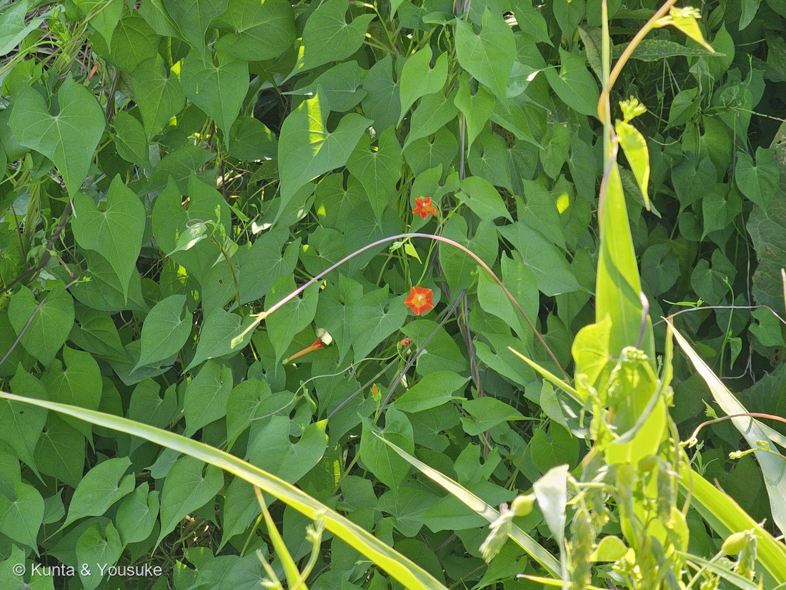
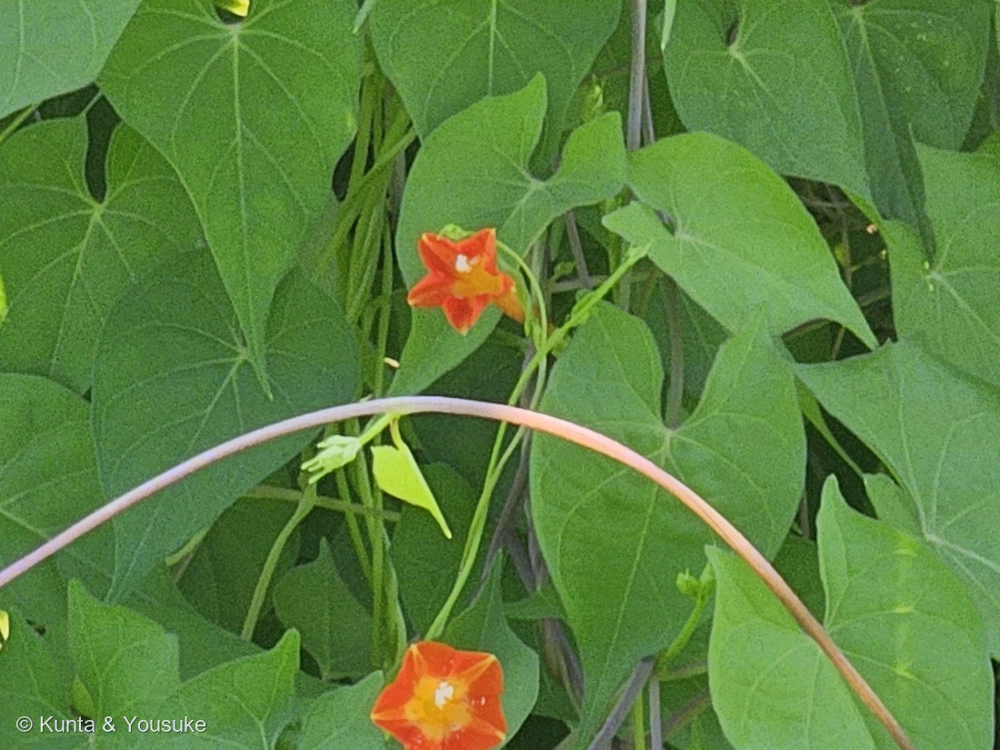
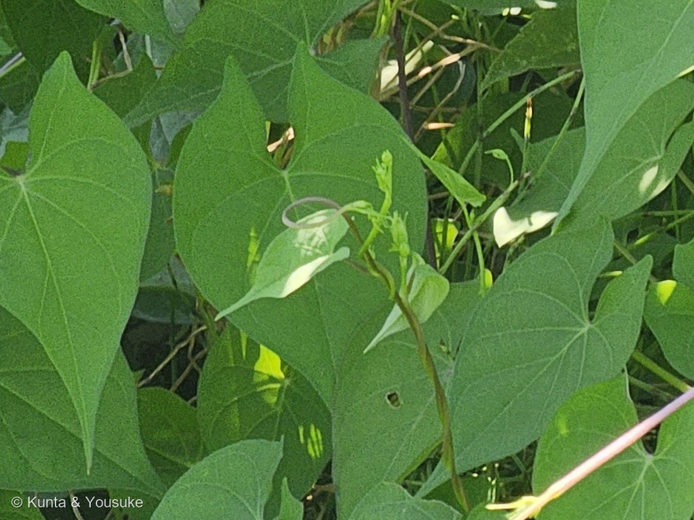

地図を読み込んでいるよ…
🔍 写真も地図も、押しているあいだ拡大して見られるよ（スマホは指を置いてすこし待ってね）。
🌍 の地図＝この子がもともと自生している場所を緑に。熱帯アメリカ原産で、江戸時代末期に観賞用として渡来し、暖かい地方を中心に各地で野生化した帰化植物。⚠ただし原産の範囲は出典で割れていて、農研機構と日本語版Wikipediaは「熱帯アメリカ」、三河の植物観察は「U.S.A南西部」とする。くわしくは下の地図の説明を見てね。
⭐熱帯アメリカからやってきた子だよ＝農研機構の警戒種リストと日本語版Wikipediaが「熱帯アメリカ原産」とする。⚠⚠ただし、原産の範囲は出典で割れているんだ＝三河の植物観察は「U.S.A南西部原産」とする＝⭐だからアメリカ合衆国も塗った。⚠でもアメリカ全土が原産という意味ではないよ＝地図はアメリカを州まで塗り分けられないので、三河のいう「南西部」も国ぜんたいの緑になってしまっているんだ（⭐276 マサキの北海道と同じことが起きている）。⭐⭐⭐そして、この緑でいちばん大事なのは「日本が入っていない」ことだと思う＝この草は江戸時代の終わりに、観賞用として人が持ちこんだ帰化植物だから――⭐いま用水路のほとりで野生に見えるのは、その子孫なんだ。⚠そして農研機構はこの子を「大豆畑へのまん延が問題となる雑草」として警戒種にしている＝⭐本文の「この草が、そこにいる意味」の節を見てね。⭐同じヒルガオ科では005 ヒルガオが日本の在来、106 マメアサガオが北アメリカ原産の帰化＝⭐⭐この子は106と同じ「アメリカから来たサツマイモ属」の仲間だね。⭐おなじ場所にいる193 ジュズダマも熱帯アジアから人が運んできた子＝⚠あの草むらは、遠くから来たものどうしがとなりあって暮らしている場所なんだ。
⚠ 地図は国（日本と中国だけ県・省）までしか塗れないから、ほんとうの分布より広く見えていることがあるよ。地図はだいたいの場所。正確なところは、上の文を見てね。
マルバルコウ（丸葉縷紅）
Ipomoea coccinea L.
属名の意味 · ⭐ギリシャ語 ips（芋虫）＋ homoios（似た）＝「芋虫に似た」 種小名 · ⭐⭐coccinea＝緋紅色（ひこうしょく）の 別名 マルバルコウソウ（丸葉縷紅草） 旧学名 Quamoclit coccinea Moench.
ヒルガオ科 · Convolvulaceae（サツマイモ属 Ipomoea・ナス目 Solanales）── ⭐図鑑で4人目のヒルガオ科（005 ヒルガオ・012 アサガオ・106 マメアサガオ）／⚠科は104のまま
燻太さんの言葉「今朝見かけたマルバルコウソウ。ジュズダマと同じ場所だよ。」「赤くて小さな花を咲かせるヒルガオ科の仲間。」「葉が細かく裂けるルコウソウの方は、まだ見たことがないな。」── ⭐⭐⭐その最後の一言が、この子の名前の謎そのものだったよ
⭐⭐⭐⭐⭐ 名前と学名の由来 ── 「丸い葉の、糸のように細い葉の草」
- ⭐⭐この子の名前は、読むと自分で自分を否定しているんだ。
- 「縷紅（るこう）」の「縷」は、細い糸のこと。「紅」は赤い花。⭐つまりルコウソウ＝「糸のように細い葉と、紅い花の草」＝葉が羽状に細かく裂けて、糸のように見えるのが名前の由来だよ。
- ⭐⭐⭐⭐⭐そしてこの子は「マルバ（丸葉）ルコウ」＝「丸い葉の、糸のように細い葉の草」。
もちろん本当の意味は「ルコウソウに似ているけれど、葉が丸いほう」。⭐でも名前だけを読むと、矛盾している＝⭐⭐名前が、本人ではなく「よその子」を指しているから、こうなるんだね。 - 学名は Ipomoea coccinea L.（旧 Quamoclit coccinea Moench.）。
- ⭐属名 Ipomoea ＝ ギリシャ語の ips（芋虫）＋ homoios（似た） ＝ 「芋虫に似た」＝つるが物に絡んで這っていく姿から。
- ⭐種小名 coccinea ＝ 「緋紅色の」＝あの朱赤の花そのもの。
- ⭐ルコウソウのほうの quamoclit は、ギリシャ語の kyamos（豆）＋ clitos（低い）＝豆のようにつるで伸びて背が低いこと、とされる。
- ⭐⭐⭐⭐きのうの279 ナシと、同じ形の話だよ。あちらは Pyrus pyrifolia＝「ナシ属の、ナシのような葉の」で、もとがイチジク属だったから起きた矛盾だった。⭐こちらは、よその子の名前を借りたから起きた矛盾。──⭐⭐名前は、その子だけを見て付けられるわけじゃないんだね。
⭐⭐ この植物のこと
- ヒルガオ科サツマイモ属のつる草。⭐この図鑑では4人目のヒルガオ科だよ。⭐106 マメアサガオも、同じサツマイモ属の帰化組だね。
- ⭐江戸時代の末期に、観賞用として渡来した。いまは暖かい地方を中心に、各地で野生化している。
- つるは3〜4mに達する。茎も葉も無毛。
- ⭐花は直径約1.5〜2cm、5角形のロート状で朱赤色、中心部が黄色。筒の部分が長くて約3.5cm。一か所に数個つける。
- 花期は8〜10月。⭐写真は8月24日だから、ちょうどまんなかのころ。
- ⭐⭐種子は1株で数千個できる。幅6〜8mmの実に4個ずつ入っていて、⭐種皮が硬く、水を通さない層のせいで休眠する＝⚠湛水（水につかること）でも、低温でも生き残る。
⭐⭐⭐ 同定について ── 「同定のカギ」が2つとも写っていた
- ⭐農研機構の警戒種リストは、この草の「同定のカギ」を2つだけ挙げているよ＝①角があるハート型の葉で、つるになる ②オレンジ色の花。
- ⭐⭐⭐写真③を見て。心形（ハート形）の葉の縁から、肩のような角がぴょんと出ているでしょう。⭐三河の言いかたでは「基部に少数の鋸歯」、農研機構では「1〜2の角がある葉身」。──⭐この角が、ただのハート形の葉と分ける目じるしなんだ。
- ⭐⭐そして写真②の花＝朱赤の5角形、中心（喉）が黄色、白い葯が筒から2、3本のぞいている。⭐どちらのカギも、そのまま当てはまった。
- ⚠おまけのルコウソウ（Ipomoea quamoclit）とは、葉を見れば一目で分かる＝あちらは葉が羽状に細かく裂けて糸のよう／花は深紅色で、平らな星形。⭐この子の葉は、裂けていないよ。
⭐⭐⭐ この草が、そこにいる意味
- ⚠⚠この子は、農研機構の「警戒種リスト」に載っている。副題は──「大豆畑へのまん延が問題となる雑草」。
- ⭐何が困るのか＝つるで大豆にからみつくので、①収穫作業のじゃまになる ②大豆の粒を汚す ③生育をさまたげる。⚠しかも生育の後期には、大豆を押し倒してしまう。⚠飼料用トウモロコシ畑では、1平方メートルあたり5〜80本で20〜40%も収量が落ちるという数字がある。
- ⭐⭐⭐そして、いちばん大事なのはここ。防除のポイントに、こう書いてあるんだ。
⭐「ほ場（畑）侵入前に、ほ場周辺に定着して繁茂していることが多い」 - ⭐⭐燻太さんがこの子を見つけたのは、まさにその「まわり」だった。用水路のほとりの草むら。──⭐畑の中ではなく、畑のとなりで待っている草なんだ。
- ⭐⭐⭐だからこの写真は、「きれいな赤い花が咲いている草むら」であると同時に、「農家の人が見つけたら困る場所」でもある。⚠観賞用として海をわたってきた花が、いまはそう見られている。──⭐⭐同じ草でも、誰の目で見るかで、まるでちがうものになるんだね。
⭐⭐ ジュズダマと、同じ場所で
- ⭐燻太さんが「ジュズダマと同じ場所」と教えてくれた。193 ジュズダマは、2026年8月4日に、用水路の石積みの護岸で会った子だよ。
- ⭐写真①の右手前に写っている、細長い葉のイネ科――⭐あれがその一角だと思う。20日たって、同じ場所に別の子が咲いていた。
- ⭐⭐⭐ジュズダマも、じつは熱帯アジアから人が運んできた子（193の地図の説明に書いた）。⭐⭐つまりこの草むらは、遠くから来た2種類が、となりあって暮らしている場所なんだ。⚠どちらも、はじめは人が持ってきた。
出典：農研機構「警戒種リスト マルバルコウ ── 大豆畑へのまん延が問題となる雑草」（熱帯アメリカ原産の帰化植物・つる性で3〜4m、茎葉ともに無毛・短い葉柄に、先端の尖った心臓型で1〜2の角がある葉身・花は直径約1.5〜2cm、5角形のロート状、朱赤色で中心部が黄色、一か所に数個・同定のカギ＝角があるハート型の葉でつるになる／オレンジ色の花・出芽は4月から10月まで長期にわたる・開花は短日で促進される・1個の果実に4個の種子、種子は約3かける2mm、1株あたり数千個・種皮は硬く不透水層で吸水が阻害されて休眠し、湛水条件や低温でも生存する・つるでからみつくため収穫作業の阻害・大豆汚粒・生育阻害となり、生育後期には大豆を押し倒す・飼料用トウモロコシ畑では1平方メートルあたり5〜80本で20〜40%の減収・ほ場侵入前にほ場周辺に定着して繁茂していることが多い）／三河の植物観察「マルバルコウ」（学名と旧学名・ヒルガオ科サツマイモ属・U.S.A南西部原産で江戸時代末期に観賞用として導入され暖地を中心に帰化・葉は長さ2〜14cm、幅1〜12cmの卵形、先は鋭く尖り基部は心形、全縁から基部に少数の鋸歯・花冠は朱赤色で直径約2cm、長さ約3.5cmの筒部が長い漏斗形・萼は先が5裂して細く尖り長さ3〜3.5mm・果実は幅6〜8mmで種子が4個入り、種子は長さ3〜4mmで黒色から暗褐色・ルコウソウは葉が糸状で花が深紅色の星形）／日本語版Wikipedia「マルバルコウ」（熱帯アメリカ原産・江戸時代末期に観賞用として渡来し暖地で野生化・和名は葉が丸いことから）／ルコウソウの名前の由来（「縷」は細い糸の意味で、糸のように細く裂けた葉と紅い花から「縷紅草」）／学名の語源（Ipomoea＝ギリシャ語 ips（芋虫）＋ homoios（似た）でつるが這う姿から・coccinea＝緋紅色の・quamoclit＝ギリシャ語 kyamos（豆）＋ clitos（低い））